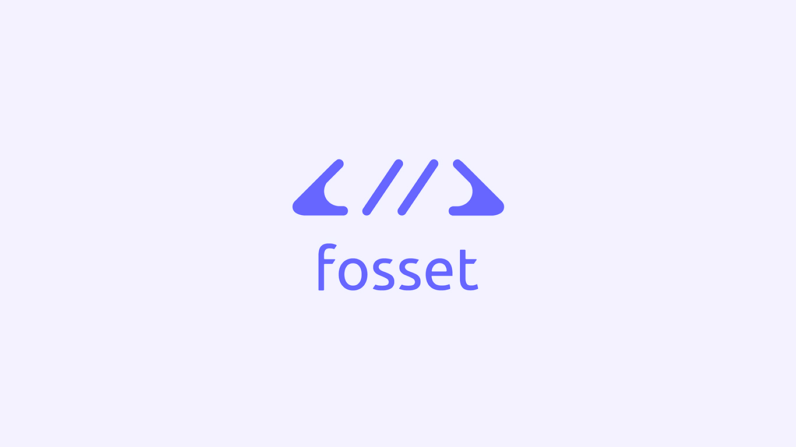
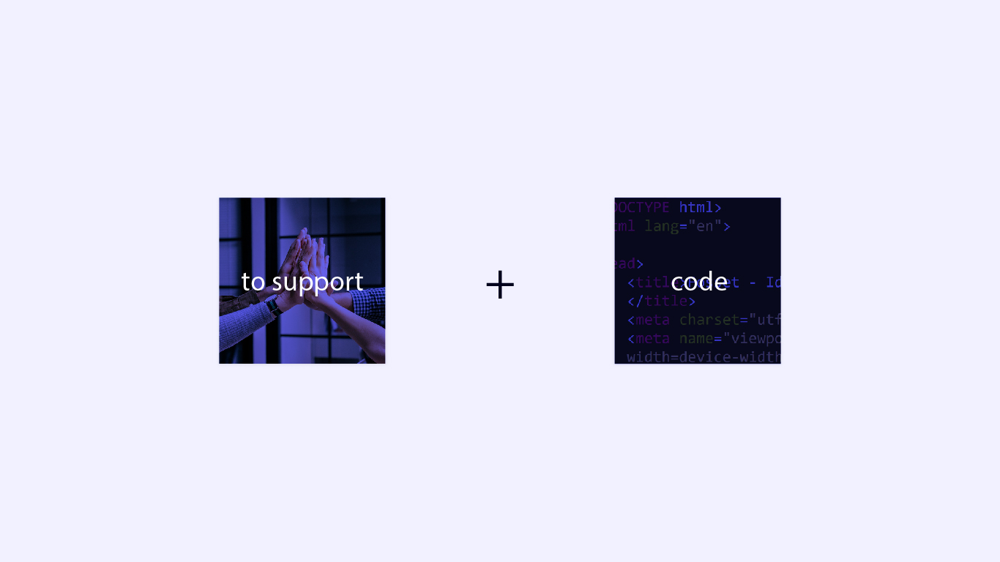
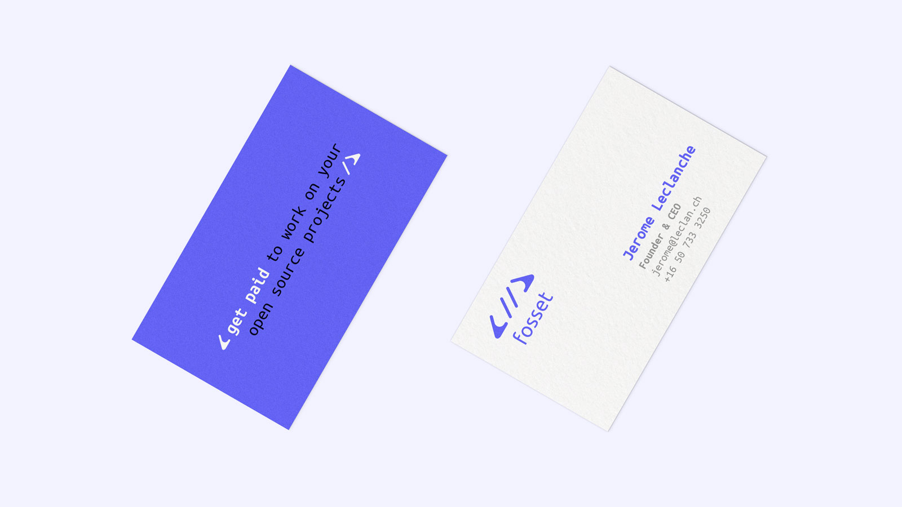

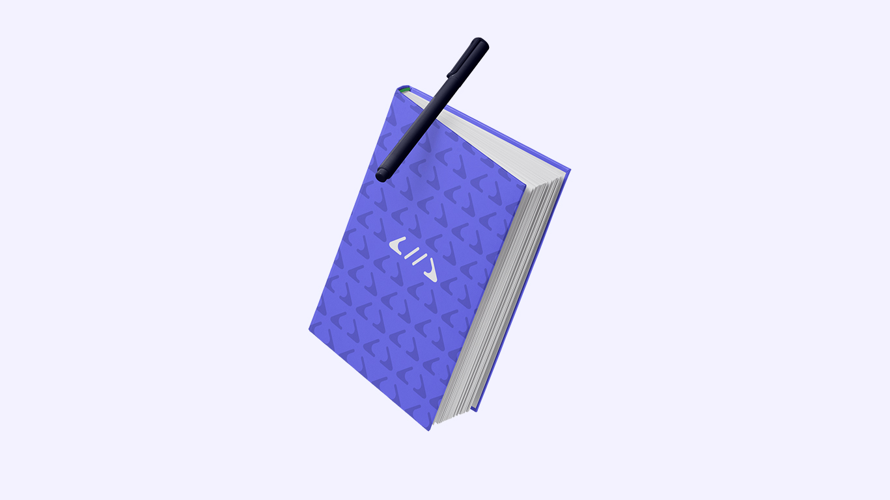
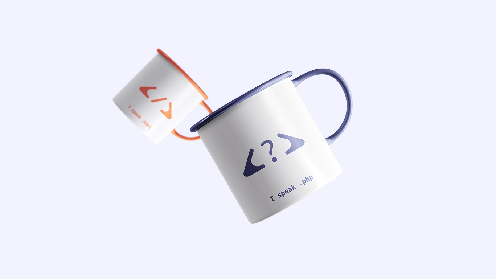
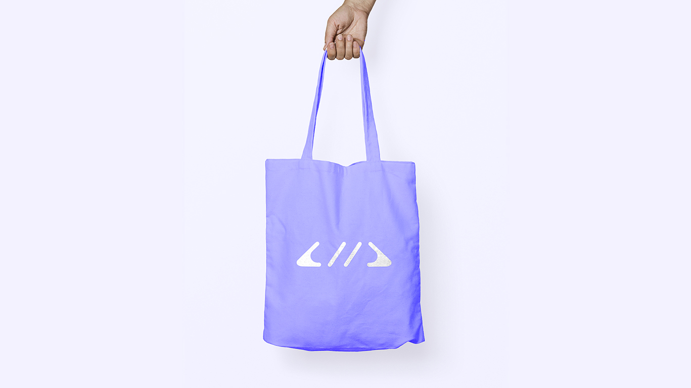
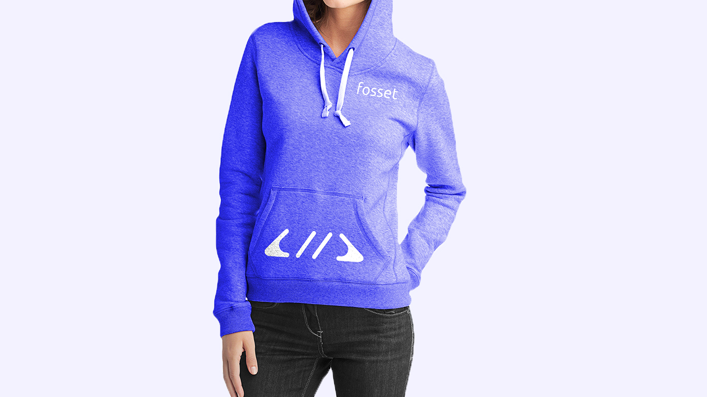
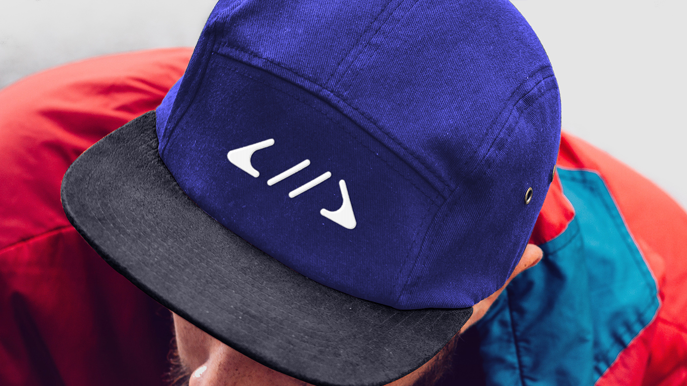
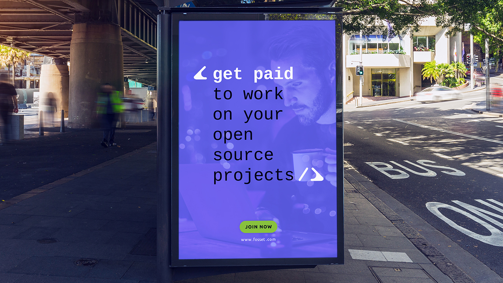

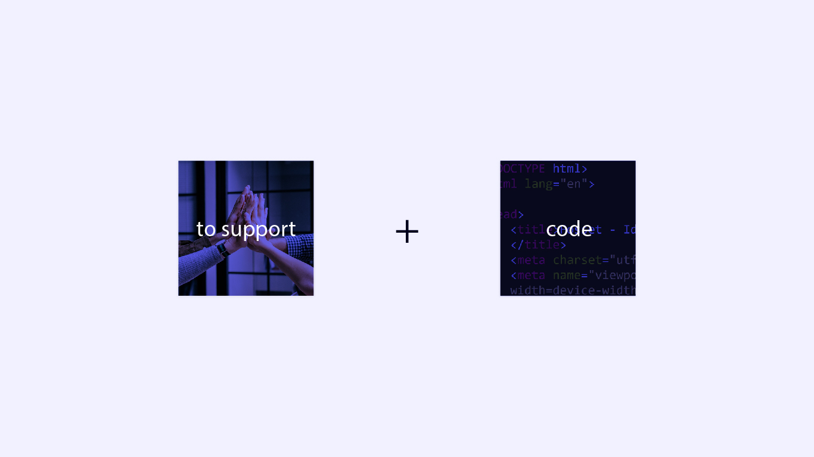
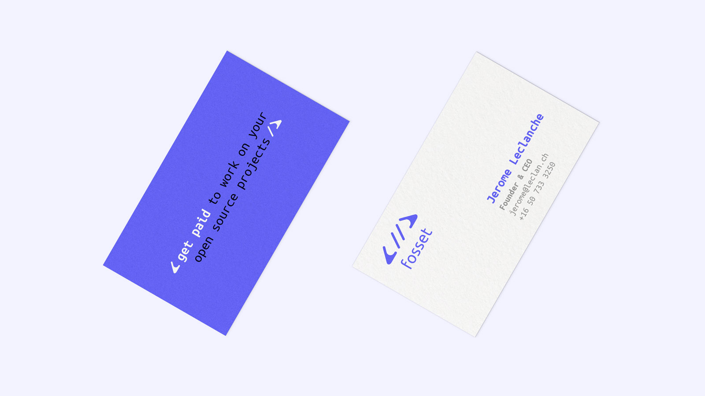
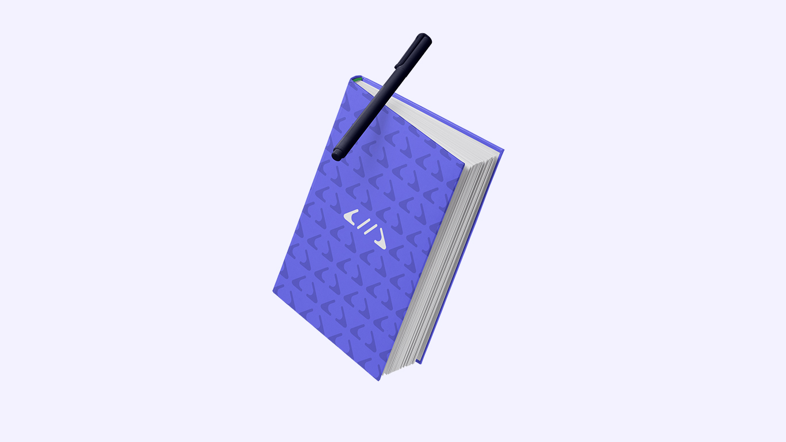
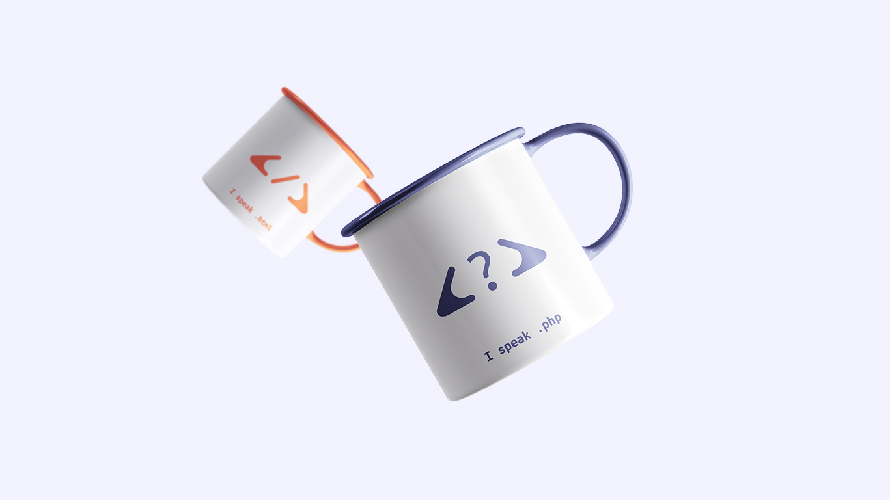
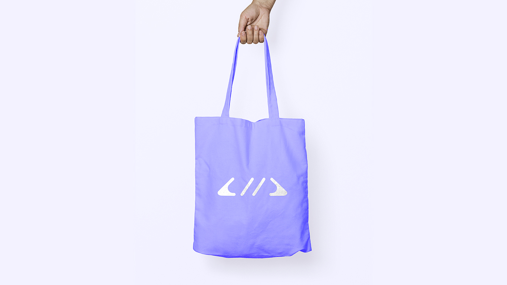
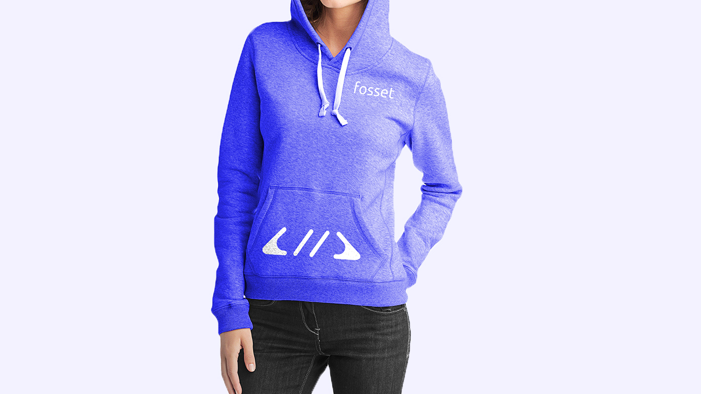
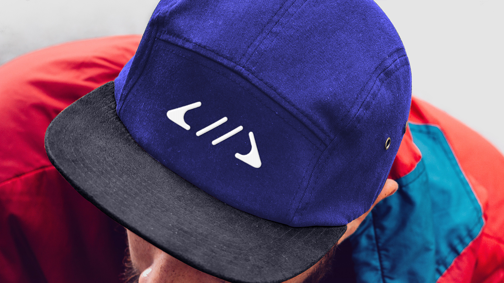
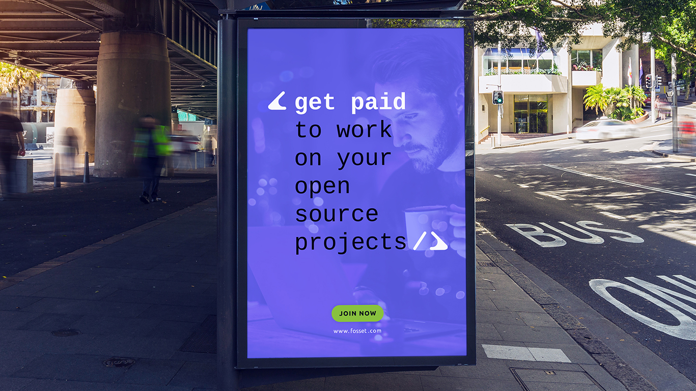
Fosset
Identité visuelle
La marketplace des devs open-source
Fosset est une plateforme qui permet aux développeurs de monétiser leur projet open-source en apportant une maintenance à leur client. Les contrats de support varient en fonction du dév (intégration d'un logiciel, création d'une nouvelle feature, etc) et ils choisissent eux-même leur prix (€ / nb d'heures ou de jours).
Objectif
La nouvelle identité visuelle se doit d'accompagner graphiquement Fosset dans le but de devenir une plateforme incontournable dans le monde de l'open source, utile et sécurisée : en laquelle nous pouvons avoir confiance.
Solution créative
L'idée des mains additionnées à une balise de code est impactante et se mémorise facilement. J'ai cherché à symboliser la disponibilité d’un développeur open-source pour un projet Tech.
Année
Août 2018
Read in English 🇬🇧